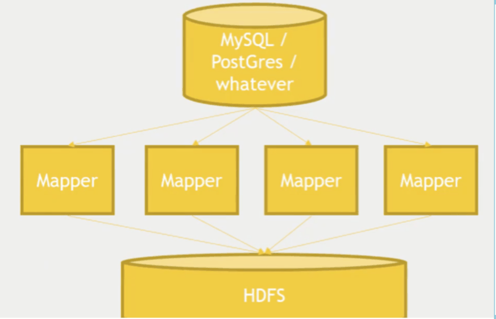

Think of this scenario: imagine you have an actual relational database (RDBMS), and you want to distribute this data to a cluster.
Why would you do this? Or rather, why would you ever need this? Because an RDBMS (for example MySQL) is monolithic in nature. So we can perform OLTP transactions but not OLAP. Hadoop (Hive), on the other hand, works for OLAP but not for OLTP.
The conventional, simplest and most straightforward way to do this is to dump the information from the database into a CSV file and then manually load that into Hadoop.
But it can be done in a much more efficient way using a map-reduce tool called Sqoop. Sqoop can help export data from MySQL to Hadoop so that you can run complex queries on it — or vice versa.
Sqoop is basically a map-reduce job in the back end.
The Sqoop import is just a single line of code on the command line: the import tool will extract the individual records from an RDBMS and copy them to HDFS. We can also set the number of mappers we want to use in the import syntax with the -m parameter at the end.

Ex. $ sqoop import --driver com.microsoft.jdbc.sqlserver.SQLServerDriver \
--connect <connect-string> --username anirudh.prabhu --password : 12345Here is how I learned to load data from Sqoop to the data warehouse in Hive on Hadoop.
Prerequisite: a Hadoop environment with Sqoop and Hive installed and working. To speed up the work, I am using the Cloudera Quickstart VM (requires 4 GB of RAM) — although you can also work with Hortonworks Data Platform (requires 8 GB of RAM). Since my laptop has only 8 GB of RAM, I prefer to work with the Cloudera VM image. If you are working with a Cloudera/HDP VM all fired up in VirtualBox, it becomes easier to work since many Hadoop ecosystem packages come pre-installed (MySQL, Oozie, Hadoop, Hive, ZooKeeper, Storm, Kafka, Spark etc.).
Code walkthrough
1. Create a table in MySQL
mysql> create table customer(id varchar(3), name varchar(20), age varchar(3),
salary integer(10));
Query OK, 0 rows affected (0.09 sec)
mysql> desc customer;
+--------+-------------+------+-----+---------+-------+
| Field | Type | Null | Key | Default | Extra |
+--------+-------------+------+-----+---------+-------+
| id | varchar(3) | YES | | NULL | |
| name | varchar(20) | YES | | NULL | |
| age | varchar(3) | YES | | NULL | |
| salary | int(10) | YES | | NULL | |
+--------+-------------+------+-----+---------+-------+
mysql> select * from customer;
+------+--------+------+--------+
| id | name | age | salary |
+------+--------+------+--------+
| 1 | John | 30 | 80000 |
| 2 | Kevin | 33 | 84000 |
| 3 | Mark | 28 | 90000 |
| 4 | Jenna | 34 | 93000 |
| 5 | Robert | 32 | 100000 |
| 6 | Zoya | 40 | 60000 |
| 7 | Sam | 37 | 75000 |
| 8 | George | 31 | 67000 |
| 9 | Peter | 23 | 70000 |
| 19 | Alex | 26 | 74000 |
+------+--------+------+--------+2. Let's start Sqooping
As you can see, the customer table does not have any primary key. I have added a few records to the customer table. By default, Sqoop will identify the primary key column (if present) in a table and use it as the splitting column. The low and high values for the splitting column are retrieved from the database, and the map tasks operate on evenly-sized components of the total range.
If the actual values for the primary key are not uniformly distributed across its range, this can result in unbalanced tasks. You should explicitly choose a different column with the --split-by argument — for example, --split-by id. Since I want to import this table directly into Hive, I am adding --hive-import to my Sqoop command.
sqoop import --connect jdbc:mysql://localhost:3306/sqoop
--username root
-P
--split-by id
--columns id,name
--table customer
--target-dir /user/cloudera/ingest/raw/customers
--fields-terminated-by ","
--hive-import
--create-hive-table
--hive-table sqoop_workspace.customersHere's what each individual Sqoop command option means. connect provides the JDBC string, and username is the database username. -P will ask for the password in the console — alternatively you can use --password, but this is not good practice as it's visible in your job execution logs and asking for trouble; one way to deal with this is to store the DB password in a file in HDFS and provide it at runtime. table tells Sqoop which table you want to import from MySQL — here it's customer. split-by specifies your splitting column — I am specifying id here. target-dir is the HDFS destination directory. fields-terminated-by — I have specified comma (by default it will import data into HDFS with comma-separated values). hive-import imports the table into Hive (using Hive's default delimiters if none are set). create-hive-table — if set, the job will fail if the Hive table already exists; it works in this case. hive-table specifies <db_name>.<table_name> — here it's sqoop_workspace.customers, where sqoop_workspace is my database and customers is the table name.
Sqoop is a map-reduce job. Notice that I am using -P for the password option. While this works, it can easily be parameterized by using --password and reading it from a file.
sqoop import --connect jdbc:mysql://localhost:3306/sqoop --username root -P \
--split-by id --columns id,name --table customer --target-dir \
/user/cloudera/ingest/raw/customers --fields-terminated-by "," --hive-import \
--create-hive-table --hive-table sqoop_workspace.customersThe above import command will create a table in HDFS by Sqoop using a map-reduce job and will import it into Hive with schema 'sqoop_workspace' and table name 'customers'.
Now, let us verify our tables with Hive.
hive> show databases;
OK
default
sqoop_workspace
Time taken: 0.034 seconds, Fetched: 2 row(s)
hive> use sqoop_workspace;
OK
Time taken: 0.063 seconds
hive> show tables;
OK
customers
Time taken: 0.036 seconds, Fetched: 1 row(s)
hive> show create table customers;
OKNext step is to query it in Hive
hive> select * from customers;
OK
1 John
2 Kevin
19 Alex
3 Mark
4 Jenna
5 Robert
6 Zoya
7 Sam
8 George
9 Peter
Time taken: 1.123 seconds, Fetched: 10 row(s)Success!
We can also do incremental imports using Sqoop. We can hold our Hive table in sync with the RDBMS by using a timestamp filter to do incremental imports over time. This allows data to be actively and constantly exchanged between the different database environments over time, ensuring consistency of the shared information and keeping it up to date. Pretty cool stuff, eh!
Comments
Sign in with GitHub to join the discussion.